Grid Flow Builder¶
The Grid Flow Builder offers a rich set of tools to control the flow of your dungeons and item placement
Create a Grid Flow Dungeon¶
Setup Dungeon Actor¶
Create a new Level and drop in a dungeon actor
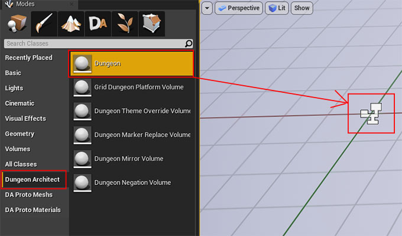Inspect the properties of the dungeon actor you just dropped. Set the Builder Class to GridFlowBuilder

Setup Theme¶
Click the + icon next to the Themes array to create a new theme entry.

Here we’ll assign an existing theme from the samples folder. For this, we’ll need to enable Show Plugin Content from the view options

We’ll assign the theme T_DefaultGridFlow.

Note
The above theme theme file is under Dungeon Architect Content > Builders > GridFlowContent > Theme folder

Setup GridFlow Graph¶
This builder requires another asset called the Grid Flow Graph. This is a graph that helps you control the flow of your dungeon. In this section, we’ll use an existing graph from the samples folder
Select the Dungeon actor and in the Grid Flow setting assign the following asset DefaultGridFlow. This is in the folder Dungeon Architect Content > Builders > GridFlowContent > FlowGraph


Grid Flow Editor¶
Let’s open the GridFlow asset in the editor:
Navigate to Dungeon Architect Content > Builders > GridFlowContent > FlowGraph and double click on DefaultGridFlow
This will open the Grid Flow Editor

Grid Flow Editor¶
Click the Build button toolbar to build the graph


Keep hitting build to get a new dungeon

Explore Grid Flow Graph¶
After you’ve built a dungeon in the editor (by hitting the Build button on the toolbar), you can select each node in the execution graph and see how the dungeon layout was built, as shown in the lower preview panels

Select an execution graph node to preview the build process¶
Editor Panels¶
The Grid Flow Editor has the following panels
Execution Graph Panel¶
This is where you design the flow of your dungeon. All other panels are for previewing the result of this panel

Layout Graph Panel¶
The initial level is designed in a higher level layout graph
Tilemap Panel¶
The result of the layout graph is eventually transferred over to a tilemap. The resulting tilemap is previewed here
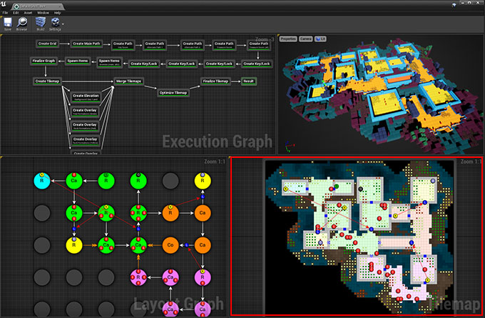Preview Viewport Panel¶
The 3D representation of the final Dungeon
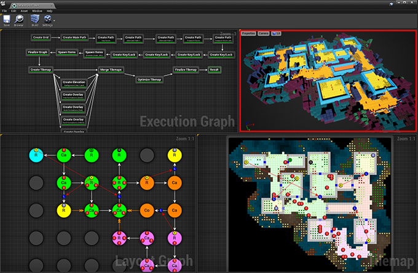Design a GridFlow Graph¶
In the previous section, we used an existing Grid Flow graph from the samples folder. In this section, we’ll design one ourselves.
Setup¶
Close the Grid Flow Editor, if open
Right click on the Content Browser and choose Dungeon Architect > Grid Flow. This will create a new Grid Flow asset. Rename it to something appropriate and double click to open it in the Grid Flow Editor


Notice that there is only one node in the Execution graph, the Result node. Our final output should be connected to this node
Create Grid¶
Right click on an empty area in the Execution Graph and from the context menu select Layout Graph > Create Grid

Connect this node to the Result node and click the Build button in the toolbar

This node creates an initial grid to work with

We’ll be designing our layout in this grid. This allows us to work on a higher level abstract graph, making it easier to control the flow. It will then be transferred over to a tilemap
Create Main Path¶
Next, we’ll create a main path within this grid. The main path has a spawn point and a goal
Create a new node Layout Graph > Create Math Path
Unlink the Create Grid node from the Result node (do this by pressing Alt+LeftClick on the Create Grid Node’s border)
Click the Build button. A main path would have been created in the grid
Keep hitting the Build button for different result

Note
If you do not see random results when you hit Build, make sure randomize is enabled. Enable this by clicking the Settings button on the toolbar and choosing Editor Settings. Then enabled Randomize Seed
Select the Create Main Path node and inspect the properties
We’ll leave everything to default for now
Notice the Path Name parameter is set to main This is the name of the path and we will be referencing this path in the future nodes with this name
You can adjust the size of the path. Start Marker Name and Goal Marker Name lets you specify a name for the markers. You can then create these markers in the theme file and add any object you like. In the sample theme, there’s a marker already created with these names and a Player Start is placed under SpawnPoint marker and a level goal handler prefab is placed under LevelGoal marker
Create Alternate Path¶
We’ll next create an alternate path branching off the main path so the player has another way of reaching the goal
Create a new node Layout Graph > Create Path

Connect the nodes together like below

Leave all the properties as default and hit Build

Select the Create Path node and inspect the properties

Change the Path Name from branch to alt. We will be referencing this path as alt in the future

You can specify the paths from which this path should start and end. The Start From Path parameter is set to main, referencing the main path we created in the previous section
The End On Path is left empty, so the end of this path doesn’t connect back to anything. We’d like this path to connect back to the main path.
Set the End On Path parameter to main

Min Path Size |
3 |
Max Path Size |
5 |
Path Name |
alt |
Node Color |
orange |
Start From Path |
main |
End On Path |
main |
This will make the alternate path (orange) connect back to the main path (green)

Keep hitting Build for different results

Assign a description to the node. Select the Create Path node and set the description property to Alternate Path

Create Treasure Room (Main)¶
We’ll add a treasure room connected to the main path
Add a new node Layout Graph > Create Path and set it up as follows:

Min Path Size |
1 |
Max Path Size |
3 |
Path Name |
treasure_main |
Node Color |
yellow |
Start From Path |
main |
End On Path |
main |

Create Treasure Room (Alt)¶
We’ll add another treasure room connected to the alt path but keep the End On Path parameter empty so it doesn’t connect back to anything:
Add a new node Layout Graph > Create Path and set it up as follows:


Min Path Size |
1 |
Max Path Size |
1 |
Path Name |
treasure_alt |
Node Color |
yellow |
Start From Path |
alt |
End On Path |
Create Key Room¶
We’ll create a room connected to the main path which will act as the key room. We’ll later configure this room to have a key that opens up a lock in the main path. It will also have a NPC (key guardian) guarding the key
Add a new node Layout Graph > Create Path and set it up as follows:


Min Path Size |
1 |
Max Path Size |
1 |
Path Name |
key_room |
Node Color |
cyan |
Start From Path |
main |
End On Path |
Note
We’ve named this path key_room. It will be referenced later on when creating the key locks
Create Key-Lock (Main)¶
We’ll next create a key-lock system on the main path. Our key will go on the Key Room we created earlier (key_room path) and the lock will be somewhere in the main branch (main path)
Add a new node Layout Graph > Create Key Lock and set it up as follows:


Key Branch |
key_room |
Lock Branch |
main |
Key Marker Name |
KeyRed |
Lock Marker Name |
LockRed |

Specify the Key Branch as key_room and Lock Branch as main
Set marker name for the key as KeyRed and lock as LockRed. Then in the theme file, you’d create marker nodes with these names and add your key and locked gate prefabs.
The sample theme already has these setup

Create Key-Lock (Treasure Main)¶
We need a key-lock to guard the treasure room in the main branch
Add a new node Layout Graph > Create Key Lock and set it up as follows:

Key Branch |
main |
Lock Branch |
treasure_main |
Key Marker Name |
KeyYellow |
Lock Marker Name |
LockYellow |

Set marker name for the key as KeyYellow and lock as LockYellow. Then in the theme file, you’d create marker nodes with these names and add your key and locked gate prefabs.
The sample theme already has these setup

Spawn Enemies (Main, Alt)¶
We’ll use the Spawn Items node to spawn enemies on the main and alt paths
Create a new node Layout Graph > Spawn Items and set it up as follows:
Paths |
main, alt |
Item Type |
Enemy |
Marker Name |
Grunt |
Min Count |
1 |
Max Count |
5 |
 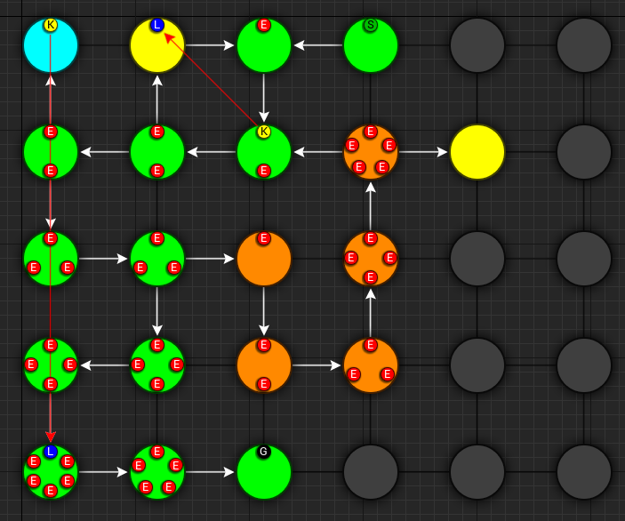
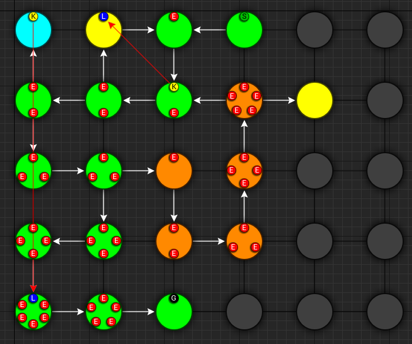
This will spawn enemies in the nodes, gradually increasing the number of enemies based on the difficulty. The difficulty increases as we get closer to the goal. You can control this from the Spawn Method properties. Leave it to default for now
We’ve specified the marker name as Grunt and an appropriate marker node should be created in the theme file so we can spawn prefabs under it. The sample theme already has this marker

Spawn Bonus (Treasure Chests)¶
Spawn treasure chests in your bonus rooms using the Spawn Items node
Create a new node Layout Graph > Spawn Items and set it up as follows:

Paths |
treasure_main, treasure_alt |
Item Type |
Treasure |
Marker Name |
Treasure |
Min Count |
1 |
Max Count |
1 |
Min Spawn Difficulty |
1 |

We’ve specified the marker name as Treasure and an appropriate marker node should be created in the theme file so we can spawn prefabs the treasure chest under it.
The Min Spawn Difficulty is set to 1. The first node in the branch will have a difficulty of 0 and the last node 1. Sometimes, the yellow branch may be 3 nodes long. Since we want the chest to occur only on the last node, we’ve set this value to 1
Spawn Key Guardian¶
We’ll add an NPC in the Key room guarding the key
Create a new node Layout Graph > Spawn Items and set it up as follows:


Paths |
key_room |
Item Type |
Enemy |
Marker Name |
KeyGuardian |
Min Count |
1 |
Max Count |
1 |

You’ll need to create a marker named KeyGuardian in the theme file and place your NPC prefab under it. This marker doesn’t exist in the sample theme and you’ll need to create it yourself if you want to visualize it
Spawn Health Pack¶
We’ll use the Spawn Items node to spawn a few health pickups along the main and alt paths
This section also shows you how to use the Custom Item Type
Create a new node Layout Graph > Spawn Items and set it up as follows:


Paths |
main, alt |
Item Type |
Custom |
Marker Name |
HealthPickup |
Min Count |
0 |
Max Count |
1 |
Spawn Method |
Random Range |
Spawn Probability |
0.4 |
Custom Item Info |
|
>> Preview Text |
H |
>> Text Color |
[Red] |
>> Background Color |
[White] |

Note
You’ll need to create a marker named HealthPickup in your theme file and add your health pack actor. The sample theme doesn’t contain this
Finalize Layout Graph¶
After we are done designing the layout graph, we’ll need to finalize it with the Finalize Graph node. This node does a few things:
Move the locks from the nodes on to the links
Create one way doors (so we don’t go around locked doors)
Assign room types (Room, Corridor, Cave)
Create a new node Layout Graph > Finalize Graph and set it up as follows:

Leave all the properties to default


We are now ready to create a tilemap from this
Create Tilemap¶
Create a new node Tilemap > Initialize Tilemap and set it up as follows:
 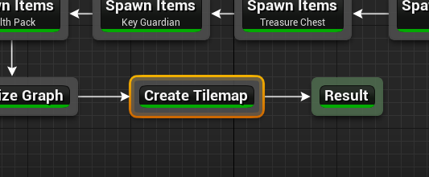
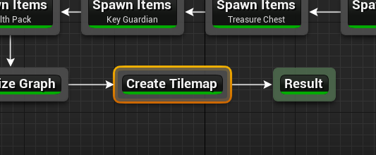
 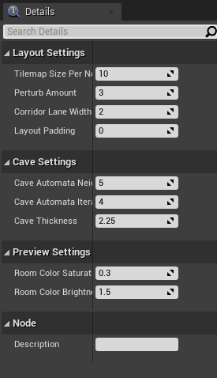
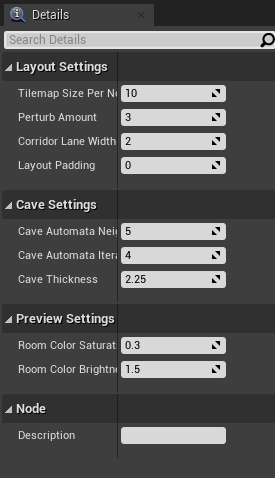
You can control the thickness of the caves from the Cave Thickness parameter. Each node on the layout graph gets converted into rooms in the tilemap.
The parameter Tilemap Size Per Node controls how many tiles are used to generate a room from the node. Bump this number up if you want more space in your rooms
If you want a more uniform grid like look on your rooms, bring the Perturb Amount close to 0
When you select a node on the layout graph, the tiles that belong to the node light up. This is controlled by the Color Settings parameters
Layout Padding adds extra tiles around the dungeon layout. Set this value to 5 so we can apply some decorations outside the dungeon bounds

3D Viewport¶
After you’ve initialized a tilemap, you now start to see a dungeon generated in the 3D viewport, representing by the tilemap.

The dungeon uses a default theme and the preview theme can be changed from the settings
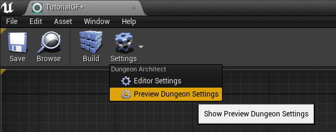
Add Background Elevation¶
We are going to create overlays and merge them with the original tilemap. Create the following two nodes:
Create a node
Tilemap > Create ElevationCreate a node
Tilemap > Merge Tilemaps

Link them up like below:


Create Tilemap Elevation properties¶
Update the properties
Noise Frequency |
0.1 |
Num Steps |
12 |
Min Height |
-10 |
Max Height |
10 |
Sea Level |
-1 |
Land Color |
Brown (HexLinear |
Sea Color |
Blue (HexLinear |

Create Tilemap Elevation Node Result¶

Merged Result¶

Dungeon Preview¶
We’ve specified the marker name as Elevation. If you place objects under the specified marker node in the theme editor, they will show up on these tiles at the given height.
Note
The Min/Max height is logical and will be mulitplied by the dungeon config’s Grid Size Y value. If the GridSize is (400, 200, 400) in the Dungeon actor’s config and the tile height happens to be 2.5, the actual placement will be on 2.5 * 200 = 500 unreal units high
The sample theme file already contains a marker named ‘Elevation’ which shows the purple/blue tiles on the scene

There are two nodes attached with material overrides (purple and blue for land and sea tiles). There’s a selector logic on the first node that gets selected if the tile is below sea level.
Add Grass Overlays¶
We’ll overlay some foliage on our dungeon using a noise parameter. Dungeon Architect always places the overlays in a way that they will not block the main path and the level will be playable. You can overlay rocks, trees and other blocking objects as well
Create a node Tilemap > Create Overlay


Create Overlay Node Connection¶

Create Overlay Node properties¶
Marker Name |
Grass |
Overlay Blocks Tile |
False |
Noise Settings |
|
> Noise Frequency |
0.15 |
> Noise Max Value |
1.49 |
> Noise Threshold |
0.5 |
> Min Dist From Main Path |
1 |
Merge Config |
|
> Max Height |
1 |
> Wall Override Rule |
Keep Wall Remove Overlay |

Result of the Grass Overlay Node¶

Merged result¶
We’ve specified the marker name as Grass. You’ll need to create this marker in the theme file and assign a mesh there. The sample theme already contains this

Dungeon Preview¶

Before / After Tilemap Result¶

Before / After Dungeon Result¶
Finalize Tilemap¶
Finalize the tilemap to complete the grid flow graph
Create a node Tilemap > Finalize Tilemap


Finalize Tilemap node places all the items on to the tilemap (enemies, keys, bonus etc)
Optimize Tilemap¶
When the tilemap based level is generated, there are many tiles that the player might never see, as they are far away from the dungeon layout

The Optimize Tilemap removes tiles that are away from the specified distance from the dungeon layout bounds

Optimize Tilemap Node Result¶
Create a node Tilemap > Optimize Tilemap

Connect it before the Finalize Tilemap node like below:

Set the Discard Distance from Layout value to 5

Optimize Tilemap Node properties¶
This will drop any tiles that are 5 tiles away from the nearest layout tile

Optimize Tilemap Before / After¶

Optimize Dungeon Preview Before / After¶
Key Lock System¶
The Key and Lock actors that were spawned by the theme engine would have the Item Metadata filled up by Dungeon Architect, provided the actor has the Dungeon Flow Item Metadata component attached to it
In the sample, the Key and Lock blueprints has the above component added to it

Key blueprint¶
Lock blueprint¶
When these actors are spawned in the scene, the item information will be filled in. This includes the Item Id, list of references to other items (like keys referencing all the other lock ids it can open)
Key Metadata¶

Lock Metadata¶
Notice the Key metadata has a reference to the red locked door’s id
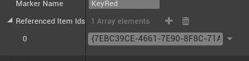Sample¶
Try out the Game Sample from the Launch Pad. Navigate to Launch Pad > Samples > Grid Flow Builder > Grid Flow Game > Clone Scene

The GridFlow game sample contains a working example of how you can implement a key lock system. There are many ways of implementing this, this sample shows one such way.
The Sample has the following scripts:
Inventory: Saves the picked up keys in the inventory
LockedDoor: Blueprint function
CanOpenDoorto check if the door can be opened. This is done by checking if the collided actor has an inventory. If so, it checks if the inventory contains a key that can open this locked door id
Check the door blueprint Dungeon Architect Content > Builders > GridFlowContent > Art > Blueprints > Locks > BP_GFT_LockBase > CanOpenDoor
Mini-Map¶
Display a 2D minimap with fog of war
Drop in a Grid Flow Mini Map actor on to the scene and configure it like below


Check the player controller on how to initialize the minimap and show it on the screen DungeonArchitect Content > Samples > DA_GridFlow_Game > Blueprints > BP_GridFlowDemo_PlayerController

Right Click > Open Image In New Tab for a clearer image¶

Check the HUD widget on how to display this in the screen
DungeonArchitect Content > Samples > DA_GridFlow_Game > UI > UI_GridFowDemo_HUD
Minimap Tracked Objects¶
To track an object in the minimap, simple add the DungeonMiniMapTrackedObject component to it and configure it.

The id maps to the id you specified in the MiniMap actor’s icon list